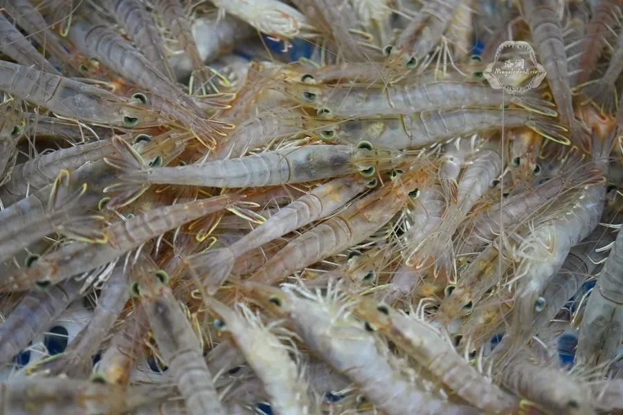

甲壳动物 · 动物界
鹰爪虾 Trachypenaeus curvirostris

体型较小的经济虾类，额剑向上弯曲如鹰爪，体色浅褐带红，黄海和渤海产量较大，是虾酱和虾干的原料。
- 分类
- 门节肢动物门纲软甲纲目十足目科对虾科属鹰爪虾属
- 栖息环境
- 近岸沙泥底和河口浅水区
- 地理分布
- 中国黄海、渤海、东海以及日本和朝鲜半岛沿海
- 保护级别
- IUCN 暂无评估；中国未列入国家重点保护名录
物种志
鹰爪虾体长 6–10 cm，身体细长，体色浅褐或淡红，散布深色斑点；额剑短而向上弯曲，形似鹰爪，因此得名；腹部各节有浅色横带，尾扇呈淡红色。
它分布于中国黄海、渤海和东海，也见于日本和朝鲜半岛，栖息于近岸沙泥底，昼伏夜出，杂食，取食底栖小动物和有机碎屑。鹰爪虾是黄渤海常见的小型经济虾类，产量较大，常被加工成虾干、虾酱和饲料。它喜欢在河口附近的浅水区活动，生命周期较短、繁殖快，资源量受海洋环境和捕捞强度影响，拖网捕捞是其主要捕捞方式。目前 IUCN 暂无评估；中国未列入国家重点保护名录，需关注捕捞季节和幼虾保护。
形态与习性
- 食性杂食，取食底栖小动物和有机碎屑
- 体长6–10 cm
- 识别额剑短而上弯，形似鹰爪
- 习性昼伏夜出，喜欢河口附近浅水
- 生活史生命周期短，繁殖快
- 经济可加工虾干、虾酱和饲料
趣味知识
- 鹰爪虾的额剑向上弯，形状像一只鹰爪，名字由此而来。
- 它体型不大，却是黄渤海产量很高的小型经济虾。
- 捕捞上来的鹰爪虾常被晒成虾干或磨成虾酱。